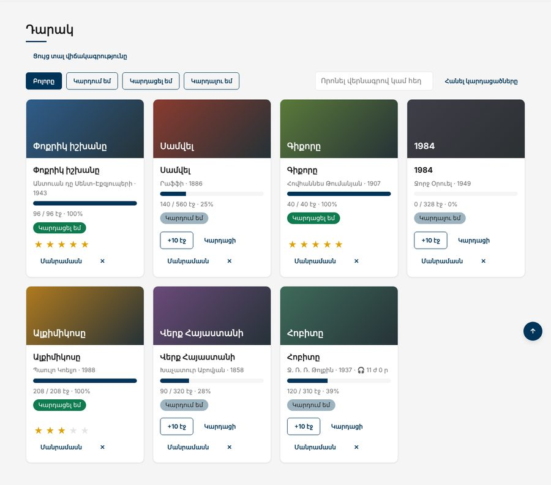

Տնային աշխատանք · JS Դաս 22 · մինի-նախագիծ
Գիրքը, դարակը և ժամաչափը դառնում են դասեր։ Book-ը ստուգում է իր տվյալները setter-ով, AudioBook-ը ժառանգում է այն, Shelf-ը պահպանում է ինքն իրեն, իսկ ReadingTimer-ը ցույց է տալիս, թե ինչու է arrow ֆունկցիան պահում this-ը։
Դաս 01–22․ class, constructor, get/set, static, #private, extends, super, this։

Աշխատիր քո կայքում (կամ նախորդ դասի օրինակում)։ CSS-ը տրված է, որ կենտրոնանաս JS-ի վրա․ HTML/CSS-ը արդեն գիտես։
starter/js/data.js — տվյալները՝ աուդիոգրքով#read՝ փակ, set read(value)-ը նետում է սխալ 0-ից փոքր կամ էջերից մեծ արժեքի դեպքումpercent, status, statusText, labelreadPages, finish, rate՝ return thistoData()՝ պահպանելու համար (JSON-ը չի տեսնում #read-ը), static fromData(data)set read(value) {
if (value < 0 || value > this.pages) {
throw new Error(`Էջը պիտի լինի 0-ից ${this.pages}`);
}
this.#read = value;
}super(data)՝ առաջին տողում, ավելացնում է minutesget label()՝ super.label + " · 🎧 11 ժ 0 ր"Book.fromData-ը ընտրում է դասը ըստ type-ի#books, #filter, #query, #save()get all, get visible, get doneCount, find, hasupdate(id, change)՝ օրինակ shelf.update(id, b => b.readPages(10))#seconds, #intervalId, start/stop/reset, get isRunningsetInterval-ում։ Փորձիր function-ով և տես, թե ինչ է լինում this-ի հետconst { status, percent, label } = bookBook-ի սխալը (օրինակ՝ առանց վերնագրի) բռնիր try/catch-ով և ցույց տուր toast-ումshelf.all[0].read = 9999 pages/books.js-ում՝ պիտի լինի սխալ, իսկ book.#read-ը՝ SyntaxErrorpages/books.js-ում getStatus(b) այլևս չկա, միայն b.status| Սխալ | Ինչպես ուղղել |
|---|---|
| Թարմացնելուց հետո կարդացած էջերը 0 են | JSON.stringify-ը չի տեսնում #read-ը․ պահիր toData()-ով |
Must call super constructor | super(data)՝ ենթադասի constructor-ի առաջին տողում |
Ժամաչափում Cannot read private member | setInterval(function () { this.#seconds++ })․ this-ը կորավ, arrow |
| Getter-ը կանչում ես փակագծերով | book.percent, ոչ book.percent() |
Սրանք Դաս 22-ի տնային աշխատանքի կետերն են։ «մինի-նախագծում» նշվածները արդեն կատարել ես վերևի քայլերում, մնացածը կատարիր առանձին ֆայլերում։
User դաս՝ name, email, age և greet() մեթոդով։ Ստեղծիր 3 օրինակ։get isAdult(), որը վերադարձնում է true, եթե տարիքը 18-ից մեծ է։set email(value)՝ վալիդացիայով (Դաս 13-ի regex-ով)։ Սխալի դեպքում՝ throw։this-ի կորուստը․ պոկիր մեթոդը օբյեկտից և կանչիր։ Ուղղիր bind-ով։Rectangle դաս՝ area և perimeter getter-ներով։ Ապա Square extends Rectangle։BankAccount դաս #balance-ով, deposit, withdraw և get balance մեթոդներով։ Ստուգիր բոլոր սխալ դեպքերը։static հաշվիչ՝ քանի՞ հաշիվ է ստեղծվել։Timer դաս՝ start(), stop(), reset() մեթոդներով։ Օգտագործիր arrow ֆունկցիա setInterval-ի ներսում և բացատրիր ինչու։ մինի-նախագծումCart դասի՝ դասարանական օրինակի պես։ Ստուգիր, որ ամեն ինչ աշխատում է։wishlist, նույն Cart դասով, բայց տարբեր բանալիով։ Համոզվիր, որ դրանք իրար չեն խանգարում։Երբ բաժին 03-ի բոլոր կետերը նշված են, բացիր օրինակը և դրա կոդը example/js/-ում։ Դաս 18-ից օրինակը բացիր Live Server-ով։ Գտիր մեկ բան, որ դու արել ես այլ կերպ, և մտածիր՝ որն է ավելի հասկանալի և ինչու։ Քո լուծումը կարող է տարբերվել և լինել ճիշտ։